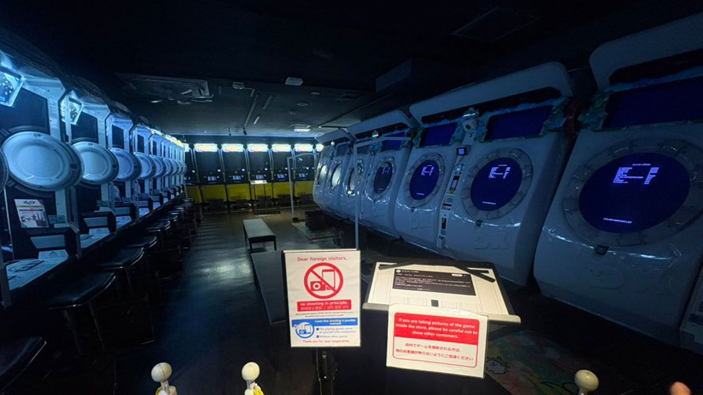

2 ноября SEGA Fave — дочерняя компания Sega, отвечающая за аркадный бизнес, — официально сообщила: часть её серверов получила несанкционированный доступ извне. Под удар попали машины, обслуживающие сеть ALL.Net и систему Aime — игровые карты, с которыми в Японии работает большинство аркадных автоматов. Уже 1 ноября, как только о взломе узнали, все связанные сервисы приостановили (с 15:00 по токийскому времени). Прошла неделя — сеть до сих пор не восстановилась полностью.
ALL.Net — это сетевой хребет японских игровых салонов: онлайн-режимы автоматов, данные игроков, сохранённые очки и предметы. Остановлены онлайн-игра по всем поддерживаемым титулам, сервис PrizeON, «Сегa Lucky Kuji Online», регистрация новых SEGA ID и просмотр адресов заведений на официальных сайтах. Без Aime автомат просто не узнаёт игрока. Досталось и конкурентам: игры Bandai Namco (Taiko no Tatsujin, Idolmaster TOURS) работают на той же инфраструктуре ALL.Net. К 8 ноября Bandai Namco вернула свои титулы в пробный режим, а игры Sega всё ещё офлайн, отмечает Tom's Hardware.
По данным первичного расследования SEGA Fave, признаков утечки информации о клиентах и партнёрах не обнаружено. Платёжные данные, включая номера кредитных карт, на взломанных серверах не хранились — они на отдельной инфраструктуре, и, по заявлению компании, не затронуты. Расследование продолжается, на его завершение «потребуется время». Об отдельных заявлениях хакеров или требований выкупа официально не сообщалось.
Японская игровая индустрия на этой неделе живёт под атаками: издатель Capcom объявил о крупнейшей утечке, затронувшей аккаунты Capcom ID, а Good Smile Company сообщила о возможной утечке платёжных данных клиентов (оба случая — Automaton West). Показательный урок: компрометация серверов одного сетевого провайдера на неделю поставила на паузу офлайн-бизнес целой индустрии — от ритм-автоматов до игр с призами.
Ставить на паузу свои пароли и карты рано: заявленного слива учётных или платёжных данных нет. Но если ваш прогресс привязан к карте Aime, до восстановления серверов он будет недоступен — SEGA Fave обещает сообщить о возвращении сервисов на официальной странице новостей и сайтах конкретных игр; актуальный статус — на аркадной странице sega.jp/arcade.